-
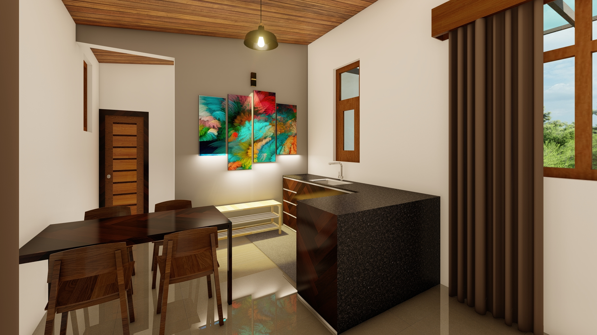

 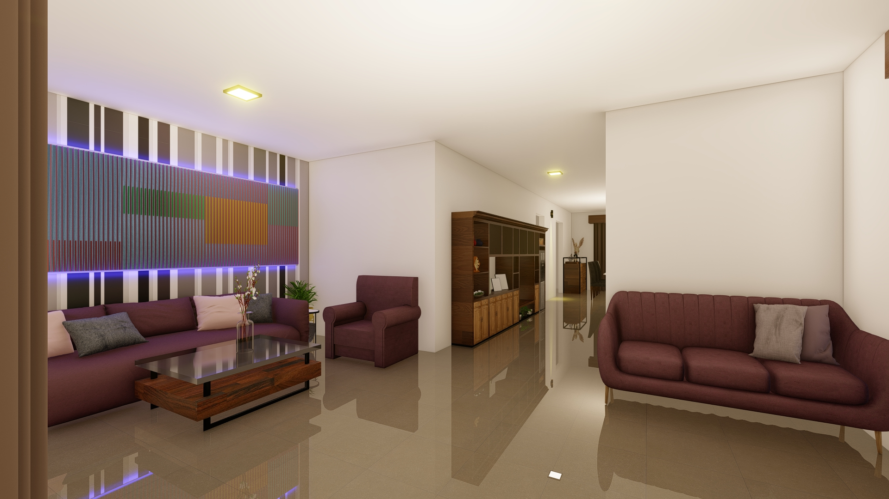
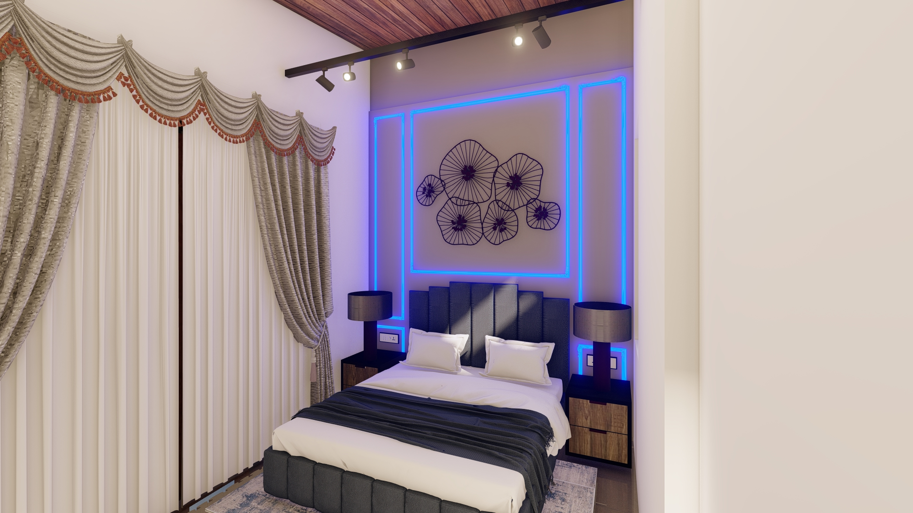
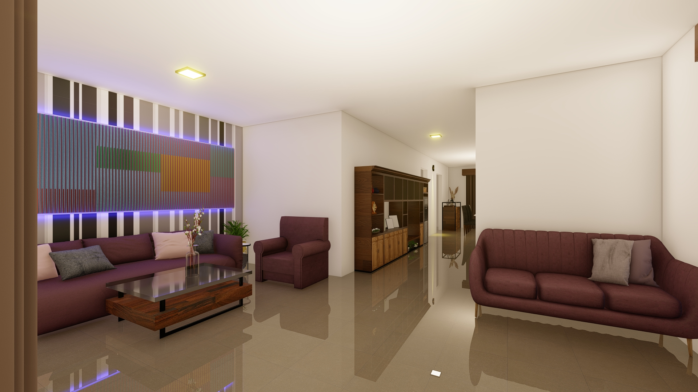
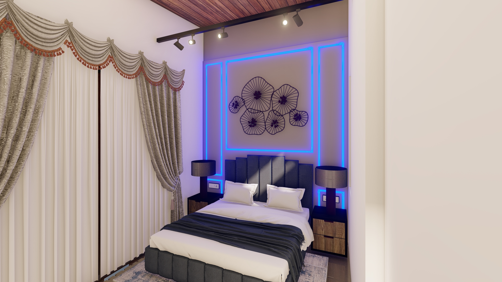
 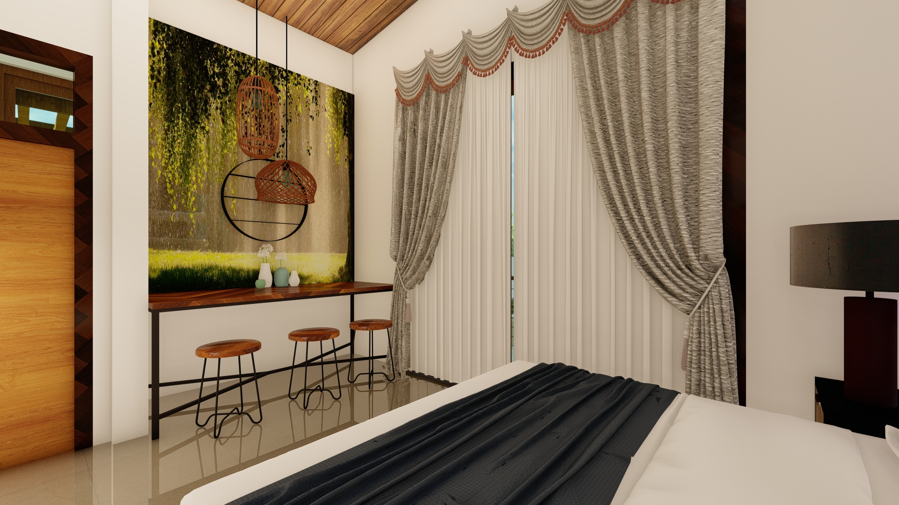
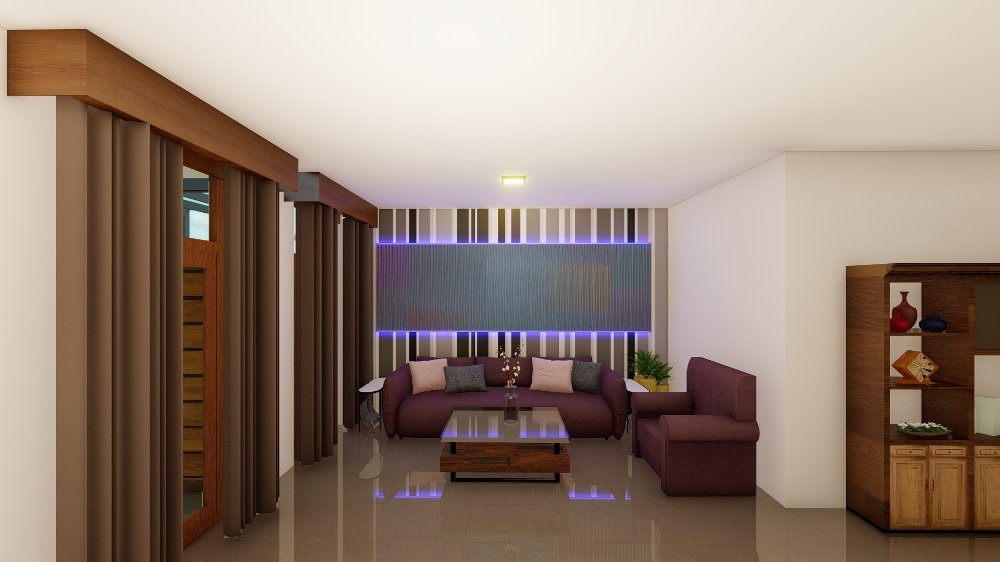
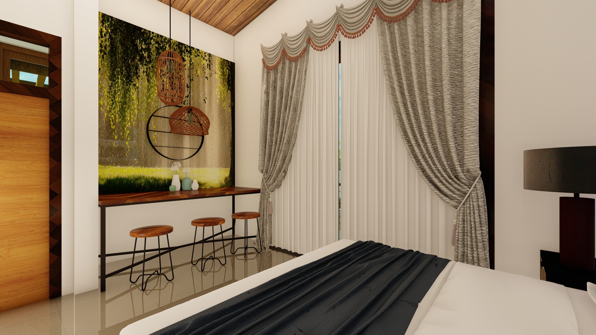
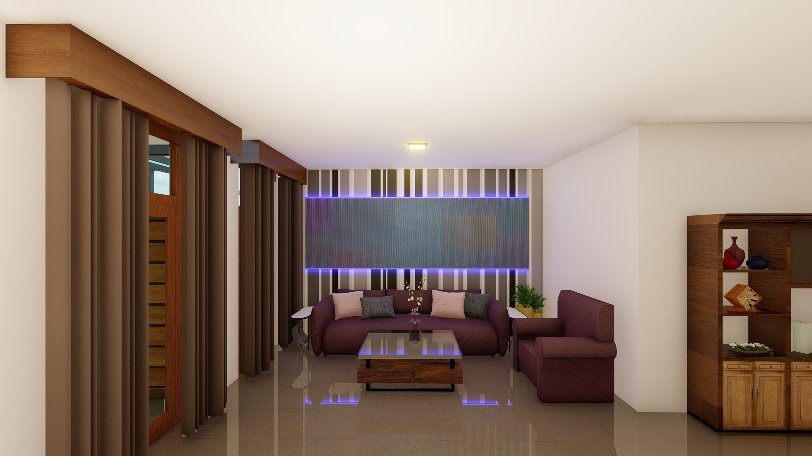
 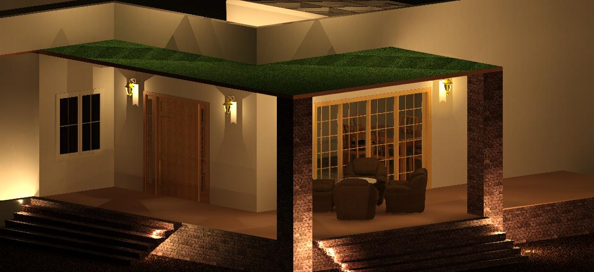
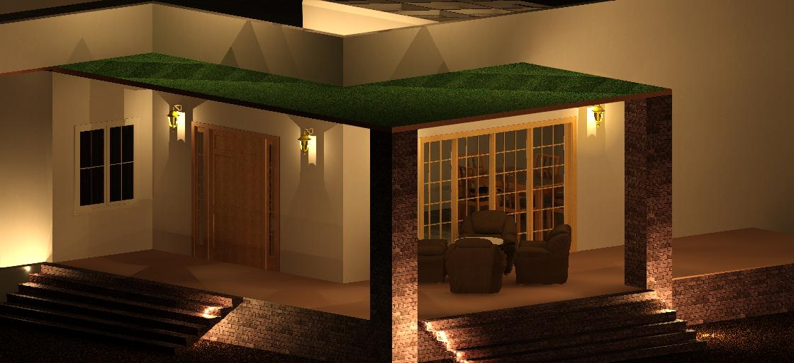
Chathula Wijethunga Revit BIM Modeler & AutoCAD Draughtsman
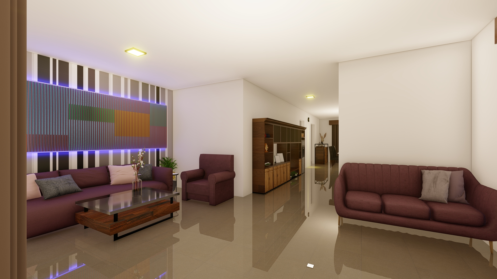
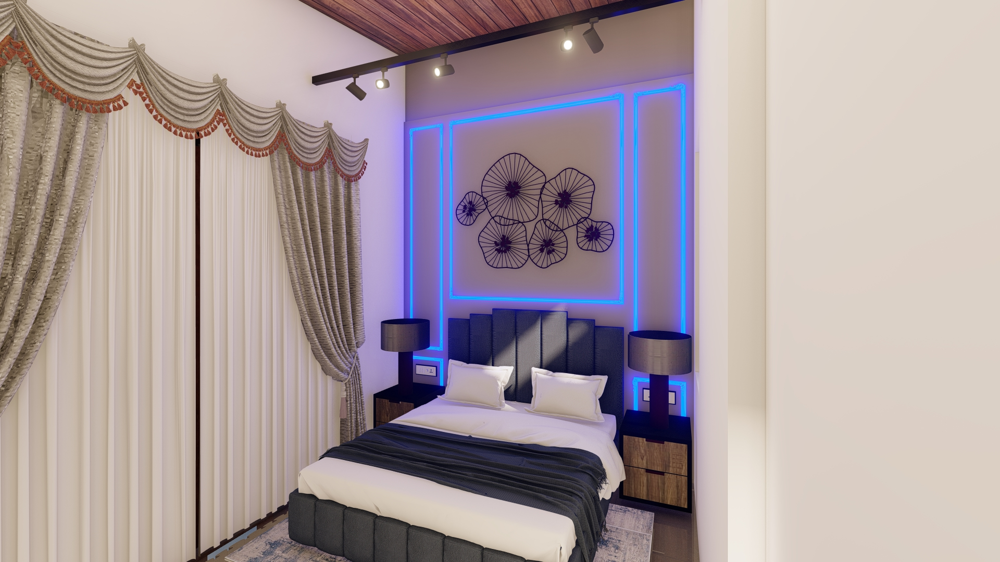
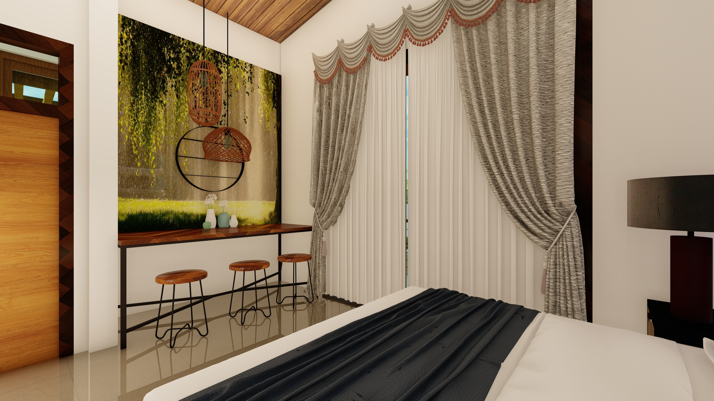
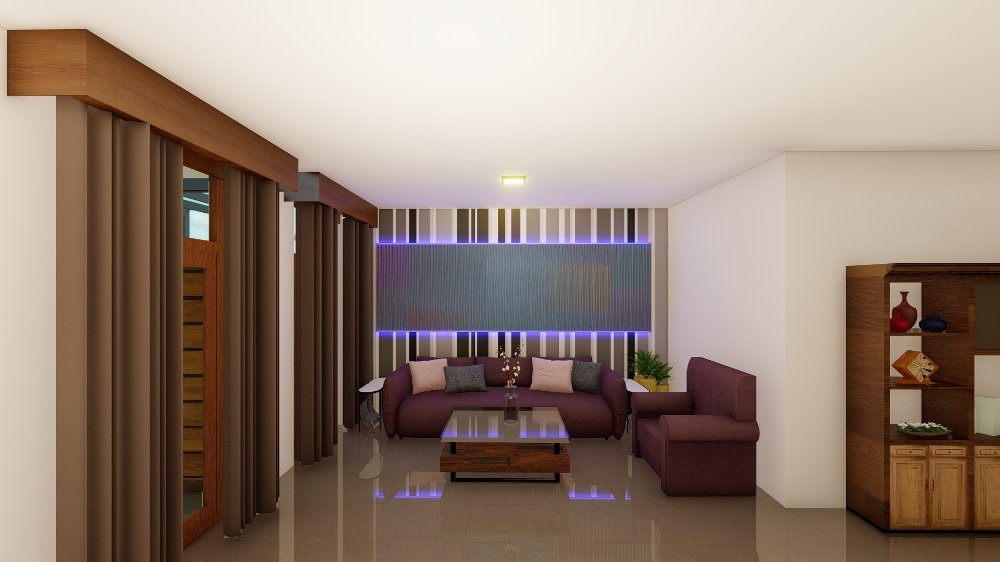
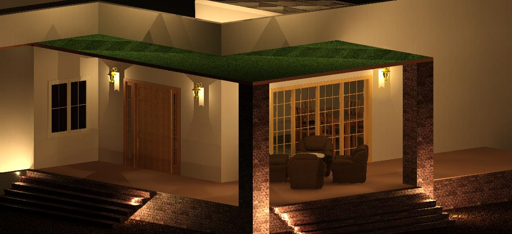
Dear Visitor,
Thank you for visiting our website. We are currently in the process of enhancing and updating this section to provide you with better content and a more seamless browsing experience.
Please accept our apologies for any inconvenience caused. We assure you that our team is working diligently to complete this page as soon as possible.
In the meantime, if you have any questions or need assistance, please don't hesitate to contact us at [insert contact information].
Thank you for your patience and understanding.
Sincerely,
Chathula Wijethunga
Plumbing Draftsman
The project involves creating plumbing drawings for a 3-story residential building located in the heart of Kottawa city area. The ground floor is designated for the owner and their family's use, while the upper floors are intended for rent. The main water source for the building is provided by the National Water Supply and Drainage Board (NWSDB). The plumbing system is designed to transfer water directly from the NWSDB supply to a sump, and then utilize a transfer pump to pump water to the rooftop terrace where overhead water tanks are located. Four 5000-liter tanks are installed on the rooftop terrace to store water for the building's usage.
Importance of proper water management in multi-story residential buildings. Understanding of hydraulic principles and calculations for designing plumbing systems. Experience in coordinating with stakeholders, such as the NWSDB, for water supply connections.
Plumbing Draftsman
The project involves creating plumbing drawings for a 3-story residential building located in the heart of Kottawa city area. The ground floor is designated for the owner and their family's use, while the upper floors are intended for rent. The main water source for the building is provided by the National Water Supply and Drainage Board (NWSDB). The plumbing system is designed to transfer water directly from the NWSDB supply to a sump, and then utilize a transfer pump to pump water to the rooftop terrace where overhead water tanks are located. Four 5000-liter tanks are installed on the rooftop terrace to store water for the building's usage.
Importance of proper water management in multi-story residential buildings. Understanding of hydraulic principles and calculations for designing plumbing systems. Experience in coordinating with stakeholders, such as the NWSDB, for water supply connections.